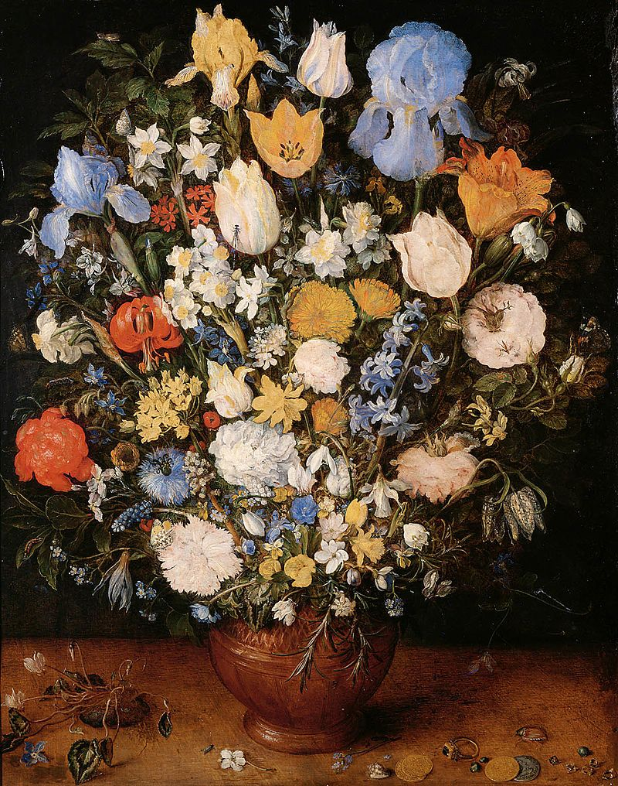
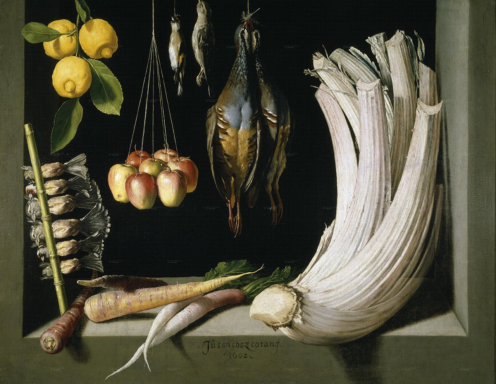
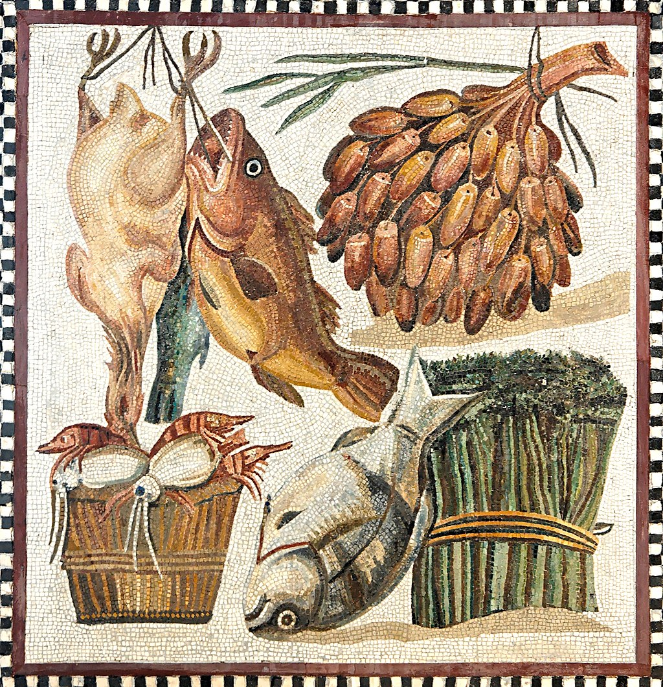
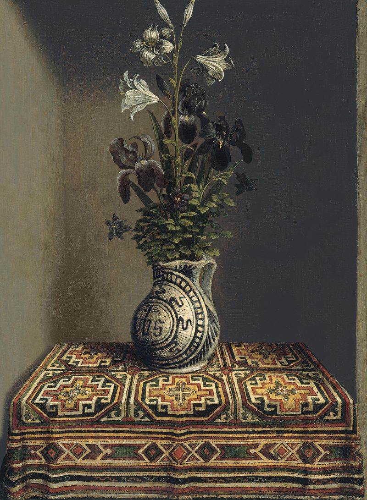
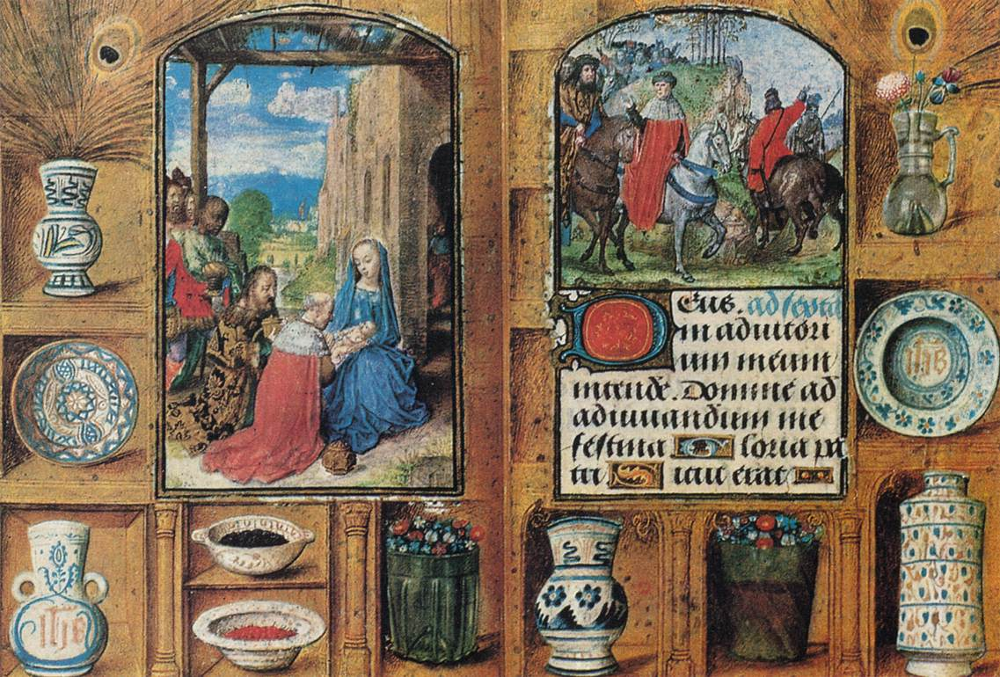

Still Life


Juan Sánchez Cotán, Still Life with Game Fowl, Vegetables and Fruits (1602), Museo del Prado Madrid

Still life on a 2nd-century mosaic, with fish, poultry, dates and vegetables from the Vatican museum>

Hans Memling (1430–1494), Vase of Flowers (1480), Museo Thyssen-Bornemisza, Madrid. According to some scholars the Vase of Flowers is filled with religious symbolism.

Various vessels in the border of an illuminated book of hours for Engelbert of Nassau, Flemish artist, 1470s